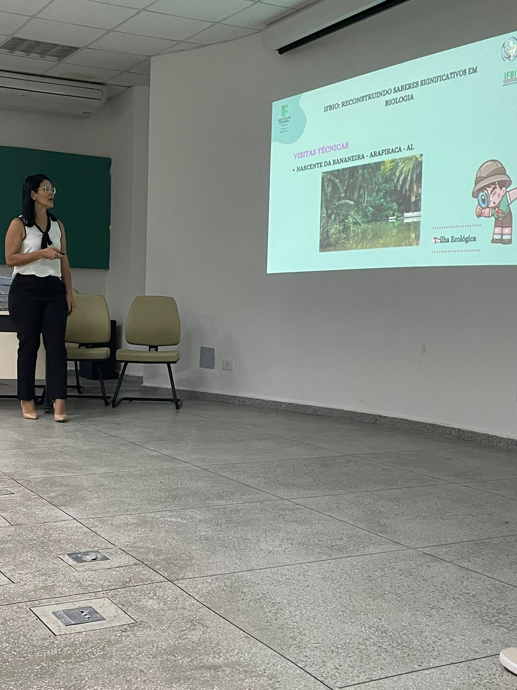

AULA INAUGURAL
A aula inaugural do Projeto IFBIO aconteceu no dia 11/10/2024, das 8h30 às 11h30, iniciando no auditório e finalizando no ginásio. No auditório, a orientadora do projeto, professora Maria José, conduziu momentos de aprendizado enriquecedores em parceria com estudantes dos segundos e terceiros anos do IFAL - Campus Arapiraca e alunas do curso de Biologia da UNEAL. A atividade promoveu uma troca de conhecimentos significativa sobre temas da disciplina de Biologia, com destaque para a participação dos estudantes dos primeiros anos das turmas 421 e 921 do período vespertino. A aula contou também com a presença da enfermeira do campus, Thayna Samilla, e do coordenador do curso de Informática, professor Douglas, que contribuíram para o sucesso do evento. No ginásio, ocorreram dinâmicas interativas, como a "Batata Quente" e o "Torta na Cara", ambas baseadas em perguntas relacionadas à Biologia. Ao final das atividades, foi realizado um lanche coletivo, encerrando o evento com momentos de descontração e integração.
